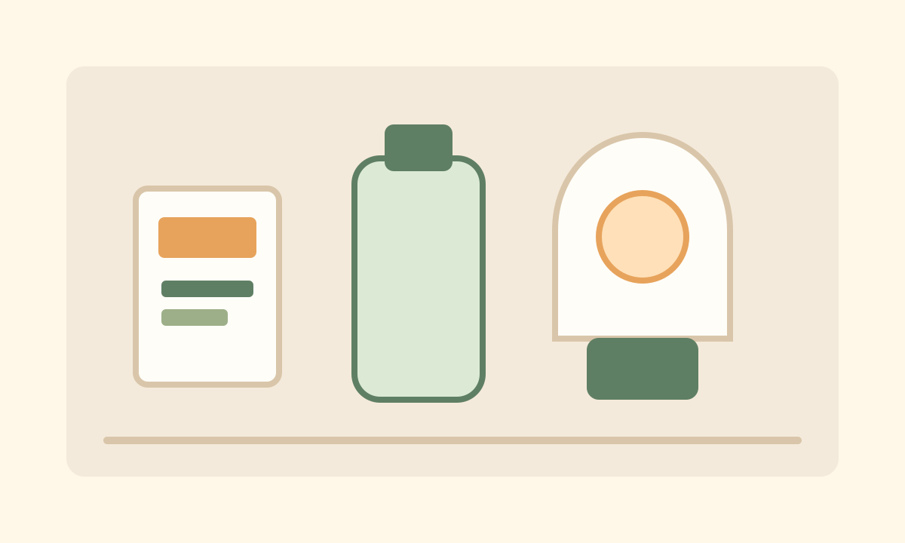

おすすめ記事
まず読んでおきたい、9月の見直し・台風前の買い足し・停電時の食事に関する記事です。
カテゴリ
9月に備える理由
9月は、防災備蓄を見直すきっかけにしやすい時期です。防災の日や防災週間があり、台風への備えも必要になります。このサイトでは、難しい防災知識ではなく「家に何を置いておけばいいか」「停電時に何を食べるか」「備蓄をどう続けるか」を中心に、暮らしに近い目線でまとめます。
備蓄食チェックリスト
水、主食、常温保存食品、甘いもの、カセットコンロ、ランタン、簡易トイレなどをスマホで見ながら確認できます。